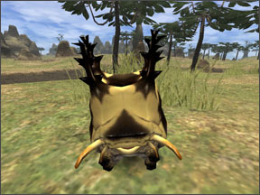

Level 75 reference · Zenith rules
|
Job: |
 Image source |


|
Zone |
Level |
Drops |
Steal |
Spawns |
Notes |
|
3-6 |
45 |
L, H, Sc | |||
|
3-8 |
41 |
L, H, Sc | |||
|
HP = Detects Low HP; M = Detects Magic; Sc = Follows by Scent; T(S) = True-sight; T(H) = True-hearing JA = Detects job abilities; WS = Detects weaponskills; Z(D) = Asleep in Daytime; Z(N) = Asleep at Nighttime | |||||
Adapted from Eden Wiki: Crawlers · Contributors and history · CC BY-SA 4.0. Revision 2352. Layout, links and optional background text adapted for Zenith.